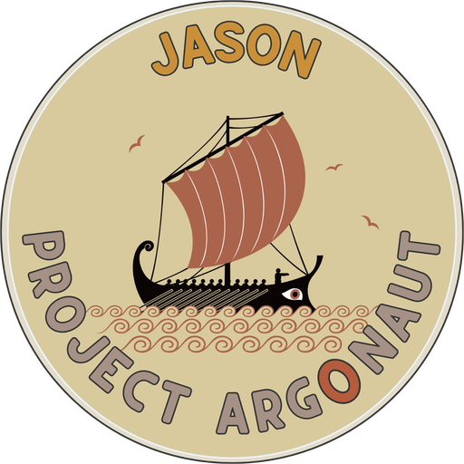

EARTH → JUPITERThe spacecraft starts with Earth's speed around the Sun (29.8 km/s). One burn along the direction of motion stretches its orbit into an ellipse. Perihelion touches Earth's orbit and aphelion touches Jupiter's: a = (1 + 5.2)/2 = 3.1 AU, e = 0.677. Burning tangentially is the most efficient way to add orbital energy, which is why the Hohmann transfer costs least.
Timing. A half-ellipse takes TOF = π√(a³/μ) ≈ 2.73 yr. In that time Jupiter moves about 83° along its orbit, so it has to be 97° ahead of Earth at launch. That geometry comes back once every synodic period, about 1.09 yr. Miss it and you wait about 13 months.
Faster trips (Lambert). Pick any launch date and arrival date and Lambert's problem returns the one conic that joins Earth-then to Jupiter-then. Shorter trips need much bigger ellipses. Below about 1.1 yr the orbit becomes a hyperbola, meaning the spacecraft leaves the Sun's gravity entirely.
Porkchop plot. Each pixel is one Lambert solve using the real JPL orbits. The valley floor is the cheapest launch. Real Jupiter is at 4.95 AU (perihelion), not 5.2, and its orbit is tilted. Even so, the minimum lands within days of the date the textbook Hohmann phase rule predicts.
Arriving. The spacecraft reaches Jupiter at aphelion, where it is slower than Jupiter. Jupiter catches up with it at v∞ ≈ 6 km/s. A short braking burn deep in Jupiter's gravity well (the Oberth effect) is enough to be captured. Juno's capture burn in 2016 was 0.54 km/s.
Model: two-body Sun-only conics (patched-conic, no Jupiter gravity on approach), JPL osculating elements at 2026-11-15. A design study, not a flight plan.
Click to close